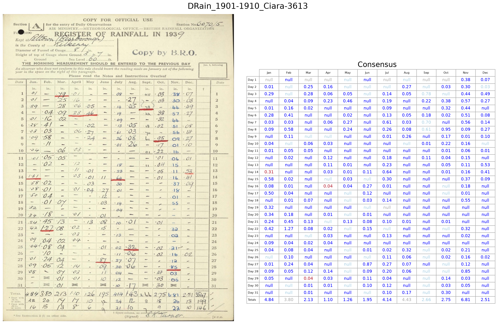

First order — fine-tune on synthetic data¶
Now we fine-tune. Using the ~1000 synthetic images built in Preparation, we train each model on the rainfall task and re-measure. These fine-tuned checkpoints are the “first-order” models.
Three notebooks:
Fine-tuning¶
The finetune_original_models notebook submits a fine-tuning job to Azure ML for each model (SmolVLM, Granite, Gemma, Ministral), waits for them to finish, auto-discovers the resulting checkpoints in the model registry, and lists them for use in the validation notebooks. Because the models are small and the training set is small, each run is quick and cheap.
The effect is dramatic¶
Validating the first-order models on the real test set, every model jumps well above its baseline:
Model |
Zeroth order |
First order |
|---|---|---|
Granite |
46% |
92% |
Ministral |
62% |
85% |
Gemma-3 |
21% |
70% |
SmolVLM |
32% |
68% |
Gemma edge |
39% |
66% |
Note that the models were fine-tuned only on synthetic data, yet they improve sharply on real images — the task skills transfer. On the same image we saw at baseline, most of the red has turned blue:
{kind=link}

The same test image after one round of fine-tuning on synthetic data. Far fewer errors (red) than the raw model.¶
The best model is now over 90%, but the weaker ones are still in the sixties and seventies. To close that gap we need to train on real images — which is the problem the second order stage solves.
What you have after this stage¶
First-order (fake-trained) checkpoints for every model, registered and ready.
Their accuracy on both fake and real data.
Next: Second order.